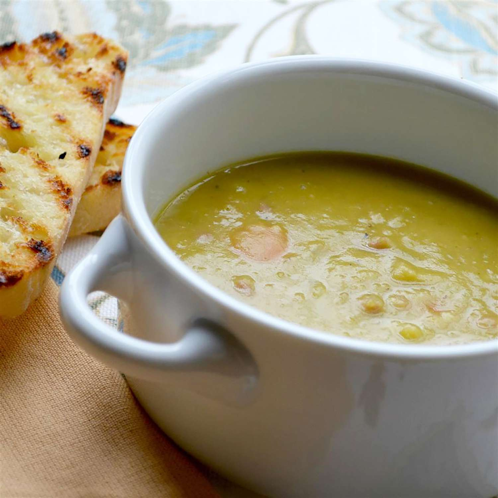

Pea Soup

Description
This hearty split pea soup with ham has a slightly sweet, somewhat salty, and
subtle smoky flavor. An ideal fall or winter soup — great for lunch or dinner.
Ingredients
- Butter:Sauté the vegetables in butter for a rich flavor base.
- Vegetables:The flavorful recipe starts with celery and onions. Of course, you’ll also need dried split peas!
- Seasonings:This split pea soup with ham recipe is seasoned with fresh garlic, salt, pepper, and a bay leaf.
- Ham: A pound of diced ham lends tons of savory, meaty flavor.
- Stock:Use a quart of store-bought or homemade chicken stock (plus 2 ½ cups of water).
Steps
- Cook the garlic, onions, and celery in butter.
- Add the split peas, ham, and bay leaf. Stir in the stock and water.
- Cook until the peas are tender and the soup is thick. Season with salt and pepper.